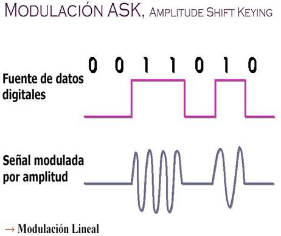
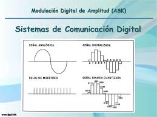

ASK es una técnica simple de modulación digital que varía la amplitud de la portadora. Stallings la describe como una extensión digital de AM.
En ASK, los niveles de amplitud representan diferentes bits. Aunque es fácil de implementar, es altamente sensible al ruido. Proakis señala que su uso es limitado a aplicaciones de corto alcance.


En conclusión, ASK es una técnica sencilla pero poco robusta frente a interferencias.